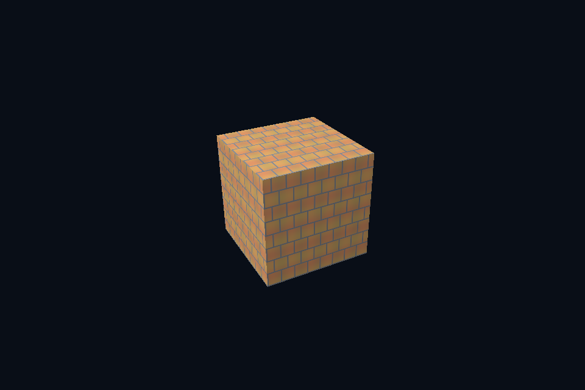

vk17_image_file · 真实图片上传
54 课目录
目的与实际执行
stb_image 解码后写入 staging，最终 image 使用 optimal tiling。这里只展示普通 2D 图片，压缩 GPU 格式、流式加载和完整材质导入是进一步工作，不因 PNG 成功就宣称全部资产格式已支持。
Image 创建声明 usage/format/extent/mip，MemoryRequirements 决定绑定存储。BufferImageCopy 描述缓冲到子资源的映射；先处于 TRANSFER_DST，再允许采样。创建 view 或更新 descriptor 不会替代 copy。
对比相同图片的 UNORM 与 SRGB image view/format 路径，shader 参与线性计算后手动显示编码。GPU blit 对 sRGB 格式的颜色处理也应与规范和参考值一致；数值 mip 实验使用 UNORM 以便逐 texel 对照。
本程序有独立实验选择与验证路径，公共实现集中在 advanced_labs.cpp。设备/API 检查、数值 compute 与图形渲染采用不同证据；不是每个程序都会弹出窗口。
构建和运行
cmake --preset vulkan-native
cmake --build --preset vulkan-native-debug --target vk17_image_file --parallel 4
.\Vulkan\native\build\bin\Debug\vk17_image_file.exe
深入学习：数据、接口与执行
本课的真实源码切片
来自 Vulkan/native/common/advanced_labs.cpp，第 354—397 行；这是现有实现的局部摘录，末尾可能处于函数中间，不是可单独编译的完整程序。
struct GpuTexture {
VkContextRef c;
VkImageResource image;
VkSampler sampler{};
VkImageView selectedView{};
VkFormat format{};
std::vector<Pixels> reference;
explicit GpuTexture(
VkContextRef context, Pixels pixels, bool mips, bool srgb = false, bool clamp = false)
: c(context) {
reference = mips ? mipReference(pixels, srgb) : std::vector<Pixels>{pixels};
uint32_t levels = uint32_t(reference.size());
format = srgb ? VK_FORMAT_R8G8B8A8_SRGB : VK_FORMAT_R8G8B8A8_UNORM;
if (mips) {
VkFormatProperties properties{};
vkGetPhysicalDeviceFormatProperties(c.physical, format, &properties);
VkFormatFeatureFlags required = VK_FORMAT_FEATURE_BLIT_SRC_BIT |
VK_FORMAT_FEATURE_BLIT_DST_BIT |
VK_FORMAT_FEATURE_SAMPLED_IMAGE_FILTER_LINEAR_BIT;
require((properties.optimalTilingFeatures & required) == required,
"Format cannot generate linear-blit mip chain");
}
image.init(c,
{pixels.width, pixels.height},
format,
VK_IMAGE_USAGE_SAMPLED_BIT | VK_IMAGE_USAGE_TRANSFER_SRC_BIT |
VK_IMAGE_USAGE_TRANSFER_DST_BIT,
VK_IMAGE_ASPECT_COLOR_BIT,
levels);
VkBufferResource upload;
upload.init(c, pixels.rgba.size(), VK_BUFFER_USAGE_TRANSFER_SRC_BIT);
upload.upload(pixels.rgba.data(), pixels.rgba.size());
immediate(c, [&](VkCommandBuffer cmd) {
for (uint32_t i = 0; i < levels; ++i)
imageDependency(cmd,
image.image,
i,
VK_IMAGE_LAYOUT_UNDEFINED,
VK_IMAGE_LAYOUT_TRANSFER_DST_OPTIMAL,
VK_PIPELINE_STAGE_2_NONE,
0,
VK_PIPELINE_STAGE_2_COPY_BIT | VK_PIPELINE_STAGE_2_BLIT_BIT,
VK_ACCESS_2_TRANSFER_WRITE_BIT);
VkBufferImageCopy copy{};
同主题跨 API 导航
先预测，再验证
把图片换成带透明通道的四象限测试图，先检查方向与字节数，再讨论混合。
参考推导：图像 RGBA 内容正确与 blending 状态正确是两件事。透明字节上传成功不代表自动启用了透明渲染。
解释一次 memcpy(width*height*4) 为什么不总能正确填 texture upload。
参考推导：API 可能要求更大的对齐行距或子资源起点。正确内容应逐行写到 footprint 的 Offset+y*RowPitch，再按有效宽度复制。
给粗糙度贴图使用 sRGB 读取，能否靠 normalize 或调曝光恢复正确粗糙度？
参考推导：不能。输入标量被非线性改写，曝光只改变输出，不能还原材质参数。先纠正数据格式与用途。
验证与边界
运行 --smoke 执行有限自动检查。数值实验读取实际 GPU 结果，图形实验检查非空图像并可查看读回。交互重建与性能还需额外证据；窗口 renderer 当前保留串行等待，双槽计算实验不会被描述为完整多帧呈现引擎。
实际画面
